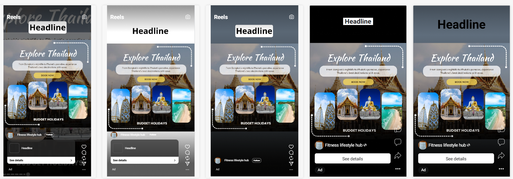
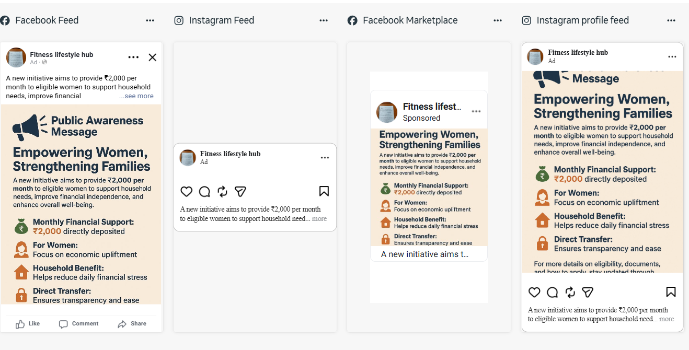

Ad Placement & Format Testing
Using Meta Ads Manager's built-in preview tool to check how the same ad creative and copy render across different placements — Reels, Feed, Marketplace, and Stories — before any spend.
1. Reels placement — Thailand travel package
Same ad creative rendered across five Reels preview variants, checking how the headline, image carousel, and CTA button adapt to the vertical, full-screen Reels format.

2. Feed & Marketplace placement — same campaign
The identical Thailand package ad checked across Feed and Marketplace placements, where longer body copy and a two-image layout come through instead of the Reels carousel.
3. Formatting exercise — long-copy ad across placements
A separate copy-heavy ad used to test how longer body text and multi-point layouts truncate differently across Facebook Feed, Instagram Feed, and Marketplace — useful for learning how much copy is safe before it gets cut off by "see more."

What this taught me
- Reels and Stories favor short headlines and minimal body copy — anything long gets visually crowded against the vertical format.
- Feed and Marketplace placements show more body text before truncating, so longer-form persuasive copy works better there than on Reels.
- Checking every placement before publishing avoids surprises — a CTA button or image crop that looks fine on Feed can break on Stories.